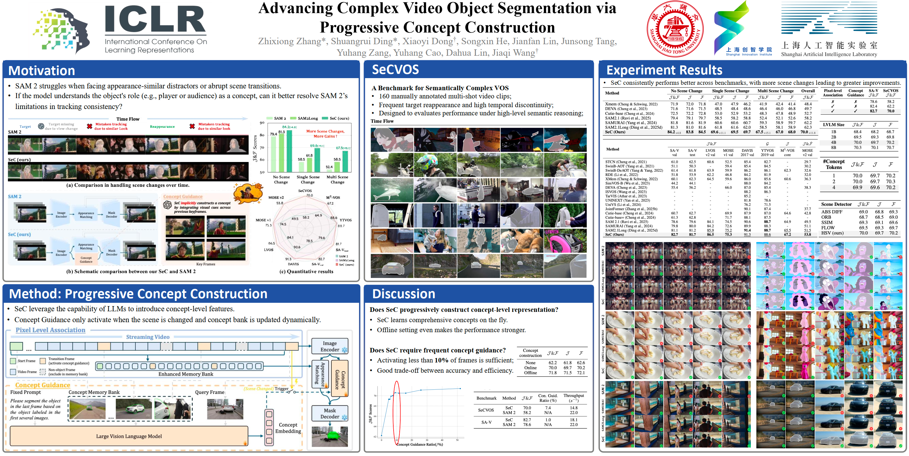
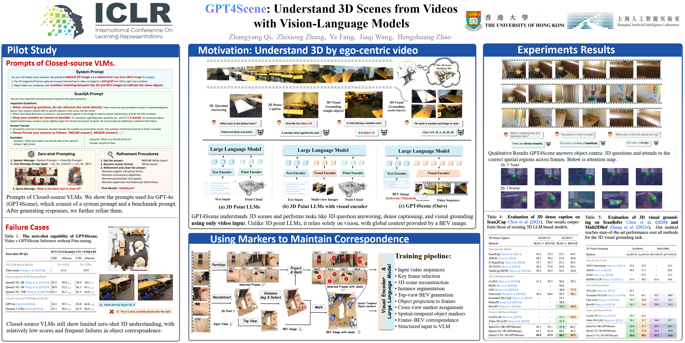
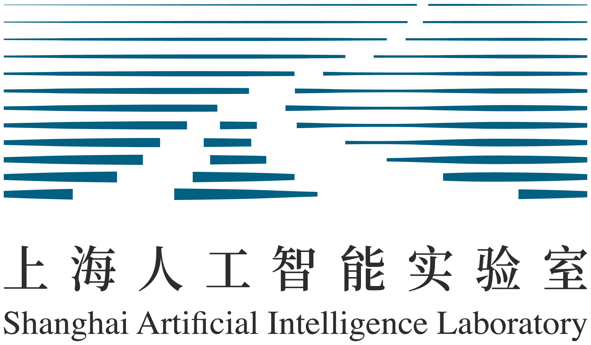

BiographyI am a 1st year Ph.D. student at Shanghai Jiao Tong University and Shanghai Innovation Institute. Prior to this, I received my B.E. degree in Artificial Intelligence at Harbin Institute of Technology in 2025. My current research focuses on:
Please feel free to contact me if you're interested in relevant research or would like to discuss potential collaborations! |
News
|
Publications Full list on Google Scholar → |
(Co-)First Author Publications |
|
 |
ICLR 2026
SeC: Advancing Complex Video Object Segmentation via Progressive Concept Construction
Paper Project Code 🤗 Model 🤗 Benchmark - - |
|
 |
ICLR 2026
GPT4Scene: Understand 3D Scenes from Videos with Vision Language Models
Paper Project Code 🤗 Dataset - - |
Co-Author Publications |
|
New!
Benchmark 2026
WildClawBench: An In-the-Wild Benchmark for AI Agents in the OpenClaw Environment
Leaderboard Code 🤗 Benchmark - |
|
ICML 2025
SongGen: A Single Stage Auto-regressive Transformer for Text-to-Song Generation
Paper Project Code - - |
|
Arxiv 2025
VLN-R1: Vision-Language Navigation via Reinforcement Fine-Tuning
Paper Project Code - - |
|
Arxiv 2025
CODA: Coordinating the Cerebrum and Cerebellum for a Dual-Brain Computer Use Agent with Decoupled Reinforcement Learning
Paper Code - - |
Experience |

Shanghai AI Laboratory
Research Intern @ InternLM-XComposer
Topic: Large Vision Language Models
Honors & Awards
|
Academic ServicesConference Reviewer: CVPR 2026, ICML 2026 |
|
|